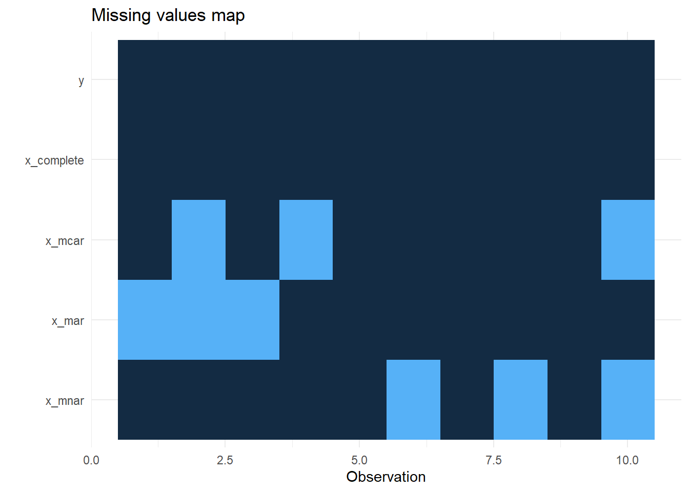

```{r}
library(readr)
library(naniar)
ex_data <- read_csv("ex_data.csv",
col_types = cols(x_complete = col_factor(levels = c("1",
"2", "3", "4")), x_mcar = col_factor(levels = c("1",
"2", "3", "4")), x_mar = col_factor(levels = c("1",
"2", "3", "4")), x_mnar = col_factor(levels = c("1",
"2", "3", "4"))))
ex_data
```Don’t impute all missing data: Missing Data Patterns
How to handle the data with missing values?
Missing Data Patterns
A missing data pattern is the structure of observed and missing values in a data set. This is not to be confused with a missing data mechanism, which describes possible relationships between data and an one’s propensity for missing values. Patterns describe where the gaps in the data are, whereas mechanisms explain why the values are missing.
The missing values in panel a have been isolated on a single variable in the univariate pattern. This pattern could appear, for example, in an experimental setting where outcome scores for a subset of participants are missing. Panel b depicts a monotone missing data pattern from a longitudinal study in which individuals who have missing data at one measurement event always have missing data at subsequent measurements. The general pattern in panel c is that missing values are scattered all through the entire data matrix. Panel d depicts a planned missing data pattern in which three variables are intentionally left blank for a large number of respondents. Panel e depicts a pattern in which a latent variable is absent across the entire sample.
One final configuration needs special consideration because it may introduce estimation issues for modern missing data-handling procedures. Because the data provide insufficient support for estimation, I refer to the configuration in panel f as an underidentified missing pattern. This pattern frequently occurs when two categorical variables have unbalanced group sizes and missing data, resulting in very low or even zero cell counts in a cross-tabulation table. Prior to conducting a missing data analysis, it is critical to screen for this configuration.
Missing Data Mechanisms
According to Rubin, there are three different missing data mechanisms:
- Missing Completely at Random (MCAR): Values in a data set are missing completely at random (MCAR) if the events that lead to any particular data-item being missing are independent both of observable variables and of unobservable parameters of interest, and occur entirely at random. When data are MCAR, one can do listwise deletion and perfom analysis; the analysis performed on the data is unbiased; however, data are rarely MCAR.
- Missing at Random (MAR): Missing at random (MAR) occurs when the missingness is not random, but where missingness can be fully accounted for by variables where there is complete information. Since MAR is an assumption that is impossible to verify statistically, we must rely on its substantive reasonableness. Depending on the analysis method, these data can still induce parameter bias in analyses due to the contingent emptiness of cells. However, if the parameter is estimated with Full Information Maximum Likelihood, MAR will provide asymptotically unbiased estimates.
- Missing not at Random (MNAR): Missing not at random (MNAR) (also known as nonignorable nonresponse) is data that is neither MAR nor MCAR (i.e. the value of the variable that’s missing is related to the reason it’s missing). One can try to include as many predictors as possible in a model to get MNAR closer to MAR.
Also, one can perform multiple imputation (MI) methods in MCAR and MAR cases.
How to test?
Distinguish between MNAR and MAR
There is no statistical test for this, but you can:
- Use domain knowledge about variables;
- Collect more data for explaning missingness;
- Do literature search
for determining the missing data mechanisim.
Distinguish between MCAR and MAR
Generally, two methods are preferred:
- Little’s MCAR test: Maximum likelihood chi-square test for missing completely at random. \(H_0\) is that the data is MCAR.
- Dummy variable approach for MCAR: One can create a dummy variable for whether a variable is missing (1 = missing, 0 = observed) and run t-tests (continuous) and chi-square (categorical) tests between this dummy and other variables to see if the missingness is related to the values of other variables.
Examples
Example dataset from Fox, Negrete-Yankelevich and Sosa (2015):
Descriptives:
```{r}
library(ggplot2)
library(finalfit)
res <- ff_glimpse(ex_data, dependent = "y", explanatory = c("x_complete", "x_mcar", "x_mar", "x_mnar"))
res$Continuous
res$Categorical
```Plot of missingness:
```{r}
missing_plot(ex_data, dependent = "y", explanatory = c("x_complete", "x_mcar", "x_mar", "x_mnar"))
```
Missingness patterns:
```{r}
missing_pattern(ex_data, dependent = "y", explanatory = c("x_complete", "x_mcar", "x_mar", "x_mnar"))
``` y x_complete x_mcar x_mar x_mnar
3 1 1 1 1 1 0
2 1 1 1 1 0 1
2 1 1 1 0 1 1
1 1 1 0 1 1 1
1 1 1 0 1 0 2
1 1 1 0 0 1 2
0 0 3 3 3 9
There are six missingness pattern on the data.
Compare:
```{r}
missing_pairs(ex_data, dependent = "y", explanatory = c("x_complete", "x_mcar", "x_mar", "x_mnar"), position = "fill")
```
And lastly, we perform Little’s MCAR tests:
MCAR case:
```{r} mcar_test(data.frame(x = ex_data$x_mcar, y = ex_data$y)) ```Fail to reject null hypothesis, data is MCAR.
MAR case:
```{r} mcar_test(data.frame(x = ex_data$x_mar, y = ex_data$y)) ```Reject null, data is not MCAR.
MNAR case:
```{r} mcar_test(data.frame(x = ex_data$x_mnar, y = ex_data$y)) ```Fail to reject null, data is MCAR (which is wrong).
Full source code: https://github.com/mrtkp9993/MyDsProjects/tree/main/MissingData
References
\(^1\) Enders, C. (2010). Applied Missing Data Analysis.
\(^2\) RUBIN, D. B. (1976). Inference and missing data (Vol. 63, Issue 3, pp. 581–592). Oxford University Press (OUP). https://doi.org/10.1093/biomet/63.3.581
\(^3\) Missing data - Wikipedia. (2016, May 13). https://en.wikipedia.org/wiki/Missing_data
\(^4\) Little, R. J. A. (1988). A Test of Missing Completely at Random for Multivariate Data with Missing Values (Vol. 83, Issue 404, pp. 1198–1202). Informa UK Limited. https://doi.org/10.1080/01621459.1988.10478722
\(^5\) Janz, N. (n.d.). Advanced Handling of Missing Data. Retrieved August 28, 2022, from https://osf.io/updyq/?action=download&version=1
\(^6\) Fox, G., Negrete-Yankelevich, S., & Sosa, V. (2015). Ecological Statistics: Contemporary Theory and Application.
No matching items
Citation
BibTeX citation:
@online{koptur2022,
author = {Koptur, Murat},
title = {Don’t Impute All Missing Data: {Missing} {Data} {Patterns}},
date = {2022-08-28},
url = {https://www.muratkoptur.com/MyDsProjects/MissingData/Analysis.html},
langid = {en}
}
For attribution, please cite this work as:
Koptur, Murat. 2022. “Don’t Impute All Missing Data: Missing Data
Patterns.” August 28, 2022. https://www.muratkoptur.com/MyDsProjects/MissingData/Analysis.html.